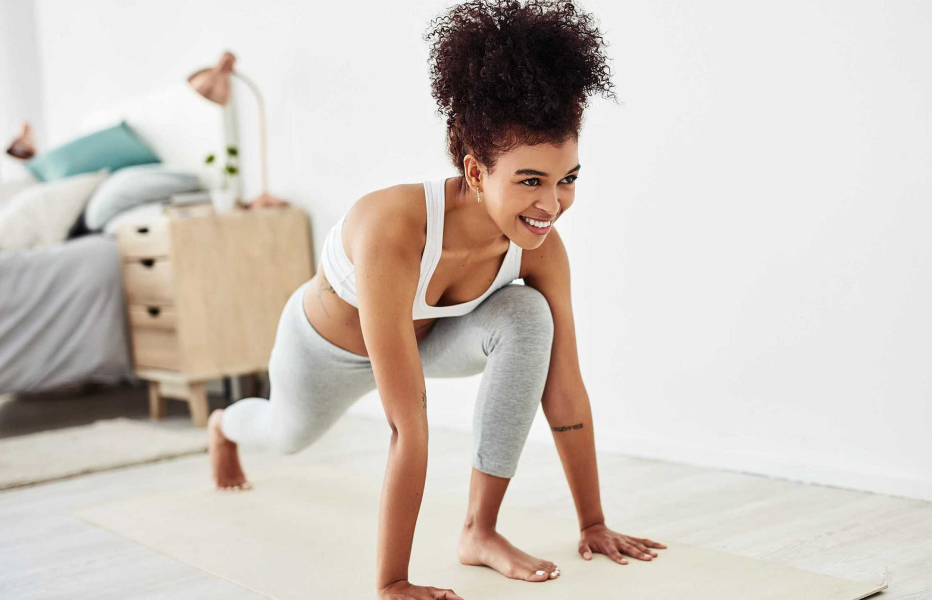
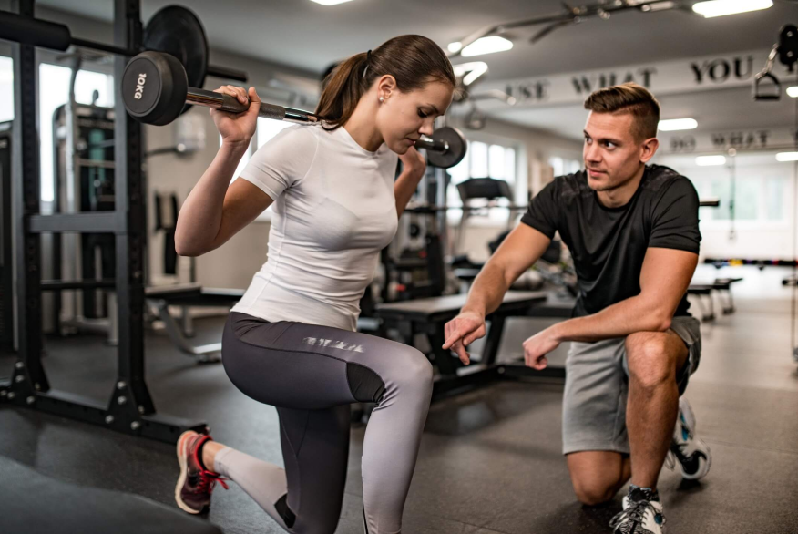

O acompanhamento de um profissional é fundamental para a execução de qualquer exercício físico. Além de ajudar você a manter a postura correta e a execução adequada das atividades, por meio do incentivo e de um plano de treino direcionado para as suas necessidades, você obtém maior qualidade de vida com segurança e objetivo. Lacorte ainda alerta que, antes de iniciar quaisquer exercícios, é preciso realizar avaliações, visando identificar se o praticante possui restrições para determinadas atividades.
Confira 4 dicas para você se motivar a praticar exercícios físicos!
Faça o que você gosta!

Para os iniciantes, entender quais exercícios e esportes que você gosta pode ser uma boa alternativa para começar a pegar gosto por atividades e transformar a prática em um hábito. “Levando em consideração que um iniciante não tem experiência e nem tempo de treinamento, o ideal deve ser exercícios que contemplem o seu gosto, sua disponibilidade de tempo para treinar e principalmente suas necessidades fisiológicas para se adaptar ao treinamento”, recomenda Lacorte.
Para sair do sedentarismo, é preciso ter cautela. O ideal é começar aos poucos, com uma caminhada, alongamentos ou exercícios e esportes mais leves. Respeitar os limites do seu corpo é fundamental, sobretudo para evitar uma possível sobrecarga nas articulações e evitar lesões. De acordo com o profissional de Educação Física, pequenas vitórias fazem muita diferença.

Busque ajuda profissional!
